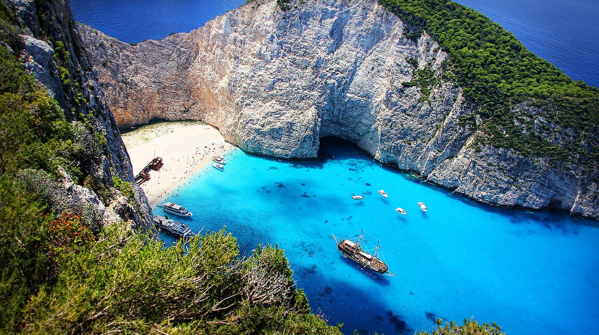
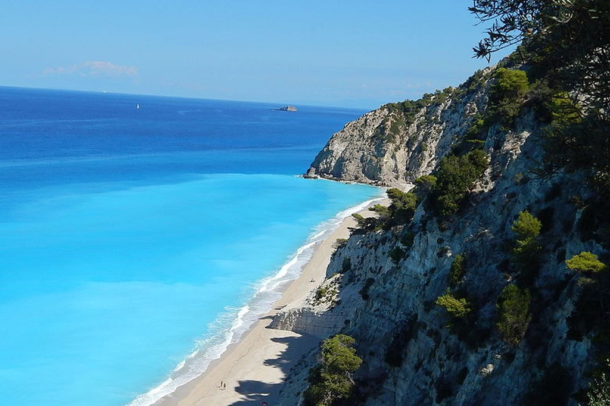

The Most Beautiful Beaches in
Greece
Navagio Beach
Egremni Beach
Natural Feature
Natural Feature


Navagio (Shipwreck) Beach
View of Egremni Beach
One of Greece’s most famous features is undeniably its beaches, ranging from
secluded and wild to organized sandy shores, and they certainly have a lot to
appeal to every beach bum. Whether you are desperate for a ray of sun or
simply need some beach inspiration, we have compiled a list of some of the most beautiful
shores in Greece—you are in for a treat.